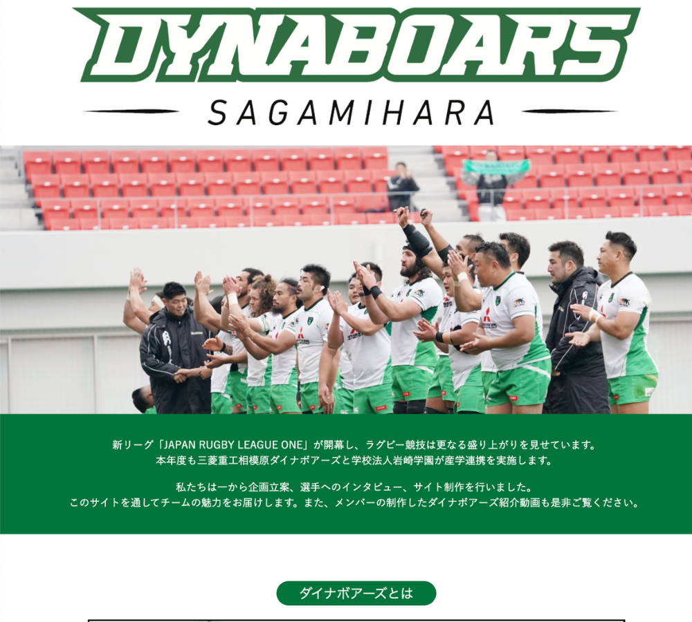

数年前から三菱重工相模原ダイナボアーズと岩崎学園情報科学専門学校が協力しています。今回はダイナボアーズを応援するための特設サイトを制作しました。
URL
まだ完成していないのでURLは少々お待ちください
担当
企画・インタビュー・デザイン
サイトの目的
ダイナボアーズをより知ってもらう
ターゲット
ダイナボアーズのファン
企画について
選手へのインタビューサイトと動画診断サイトの2つの軸をもとに制作を開始しました。
インタビューでは情報科学専門学校の学生を対象にアンケートをして学生が面白い、興味があると答えた質問をもとに選手へのインタビューを実施しました。「筋トレ、選手の食事」などチームメンバーだけでは出てこなかった質問もあり、より充実したインタビューないようになりました。インタビュー当日は選手の方が気さくに話していただいたので想定よりも多くの収穫がありました。
ダイナボアーズには公式YouTubeがあるのでどんな動画があるのか調べるところから始まりました。動画診断ではメンバーと話し合いながらファンはどんなことを知りたいと思っているのか考えました。
デザインについて
ダイナボアーズのテーマカラーである緑をメインカラーとして使用しました。最小に想定していたデザインがインタビューの内容と少し違ったので改めてデザインを考えました。見る人が飽きないように動画や記事の内容に気を配り制作をしました。